1
1
TL;DR
GenAI model weights exhibit exponent concentrationFloating-point exponents in trained model weights cluster within a narrow range with only 2–3 bits, far below the 4–8 bits allocated by standard formats., enabling lossless FP8 compressionECF8 applies Huffman coding to low-entropy exponents with GPU-optimized decoding, achieving bit-exact weight reconstruction with zero quality degradation. that delivers real inference speedupUp to 26.9% memory savings free GPU memory for larger batch sizes, yielding up to 177.1% throughput acceleration on models with up to 671B parameters..
We present a theoretical and empirical study of exponent concentration in GenAI model weights: floating-point exponents consistently exhibit low entropy across architectures and modalities. We trace this phenomenon to $\alpha$-stable distributions induced by SGD and prove a compression limit near FP4.67. Building on these insights, we propose ECF8, a lossless FP8 compression framework with entropy-aware encoding and GPU-optimized decoding. Experiments on LLMs and DiTs with up to 671B parameters demonstrate up to 26.9% memory savings and 177.1% throughput acceleration, all with perfectly lossless computation.
Exponent Concentration in GenAI Weights
In low-precision floating-point formats (BF16, FP8), each weight is encoded as $x = (-1)^s \cdot 2^E \cdot M$, where $s$ is the sign bit, $E$ is the exponent, and $M$ is the mantissa. Standard formats allocate 4–8 bits for exponents, implicitly assuming they spread across the full representable range. But do they?
We empirically examine weights across GenAI models spanning LLMs, diffusion transformers, and mixture-of-experts architectures. Across all models, exponents consistently cluster within a narrow range, exhibiting Shannon entropy of only 2–3 bits, far below the allocated bitwidth. This persistent low-entropy pattern strongly suggests an underlying distributional principle.
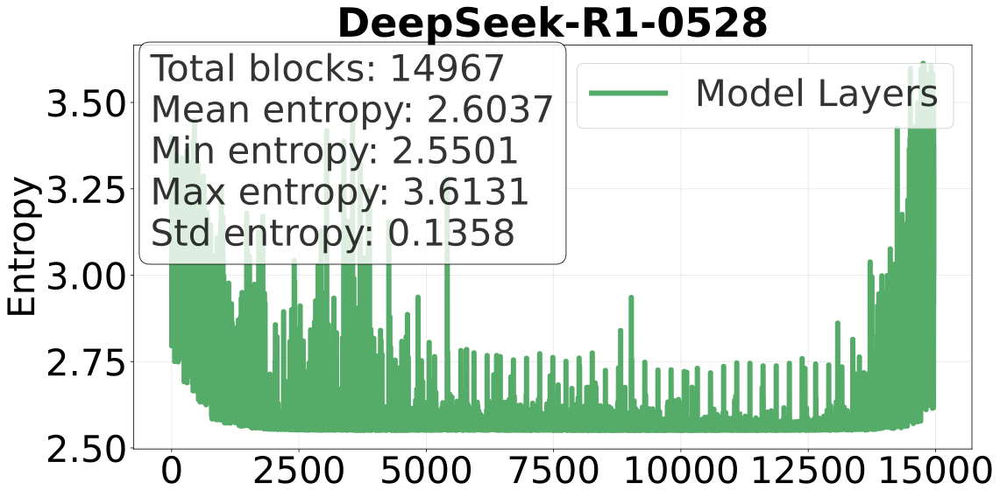
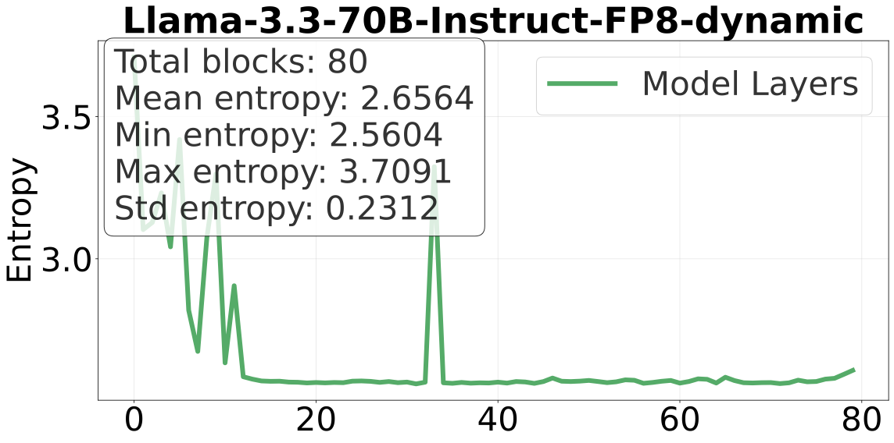
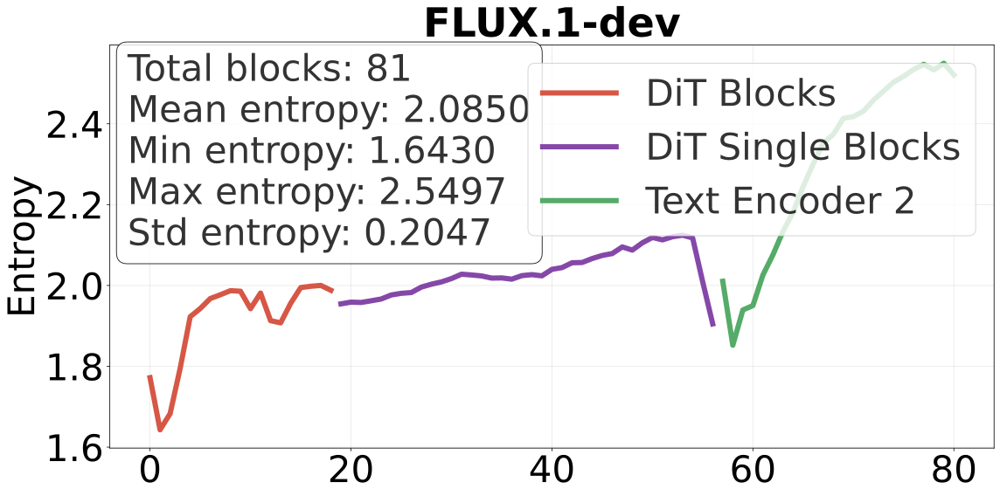
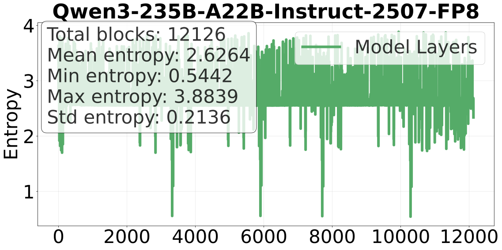
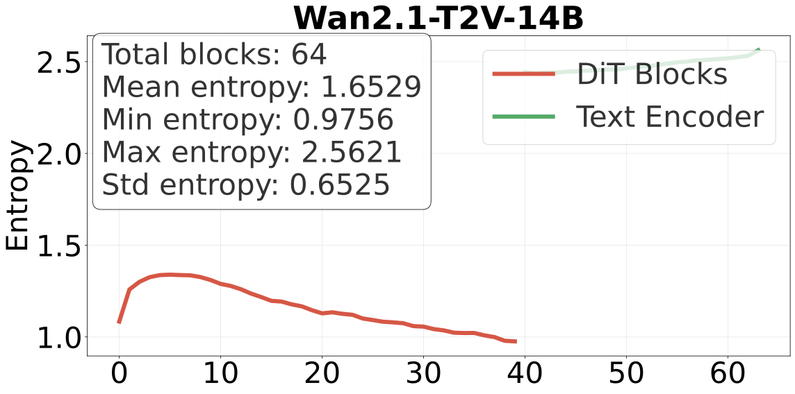
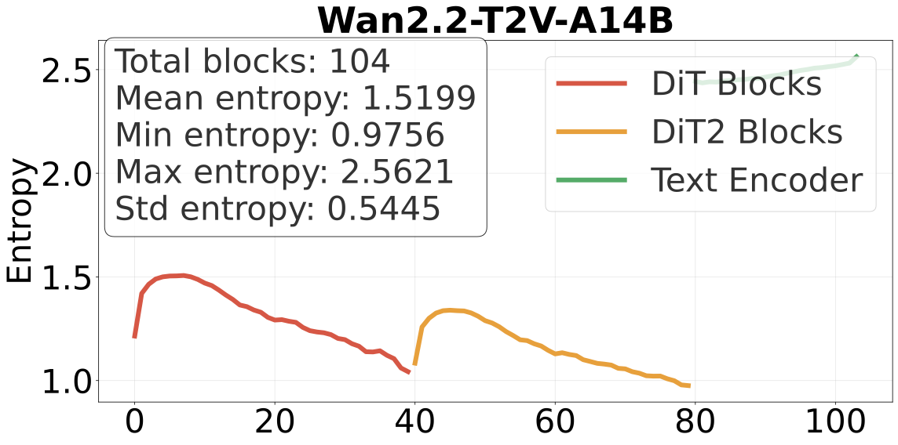
Exponent entropy is consistently low across architectures and modalities. Layer-wise entropy is consistently around 2–3 bits.
Key Observation: Floating-point exponents in trained GenAI model weights do not spread uniformly; instead, they concentrate within a narrow range with only 2–3 bits, leaving significant headroom for lossless compression.
Why Exponents Concentrate
Exponent concentration is not coincidental, but rather arises from the heavy-tailed dynamics of stochastic gradient descent. Under SGD, gradient noise exhibits power-law tails $\mathbb{P}(\lvert\Delta_t\rvert > x) \sim x^{-\alpha}$ with $\alpha < 2$. By the Generalized Central Limit Theorem, accumulated weight updates converge to $\alpha$-stable distributions, providing a rigorous foundation for exponent concentration.
Exponent probabilities decay geometrically from zero at rate $2^{-\alpha}$, guaranteeing finite entropy regardless of $\alpha$. For the Gaussian case ($\alpha=2$), the entropy bound gives $1.6 \leq H(E) \leq 2.67$ bits. Including the sign bit and a minimal mantissa, the absolute compression floor is approximately:
While FP4.67 is impractical due to hardware alignment constraints, it motivates our practical FP8 format: ECF8 approaches the entropy-driven theoretical limit while retaining sufficient mantissa precision and hardware compatibility.
Theoretical Insight: Exponent concentration is a statistical law of trained neural networks, arising naturally from the $\alpha$-stable dynamics of SGD. The theoretical compression limit of FP4.67 establishes ECF8's FP8 format as a principled engineering choice.
ECF8: From Theory to Practice
ECF8 is a lossless compression framework comprising three core components: entropy-aware encoding via Huffman coding on FP8 exponents, a massively parallel GPU decoding kernel, and a dynamic tensor management system for memory-efficient inference.
Encoding: Huffman Coding on Exponents
FP8 weights allocate 4 bits for exponents, yet the actual exponent entropy is substantially lower. ECF8 exploits this gap via Huffman coding: frequent exponents receive shorter codes, and rare ones receive longer codes. The encoding pipeline builds optimal Huffman trees from exponent frequencies, constructs hierarchical lookup tables for GPU-friendly decoding, and generates synchronization metadata for parallel decompression.
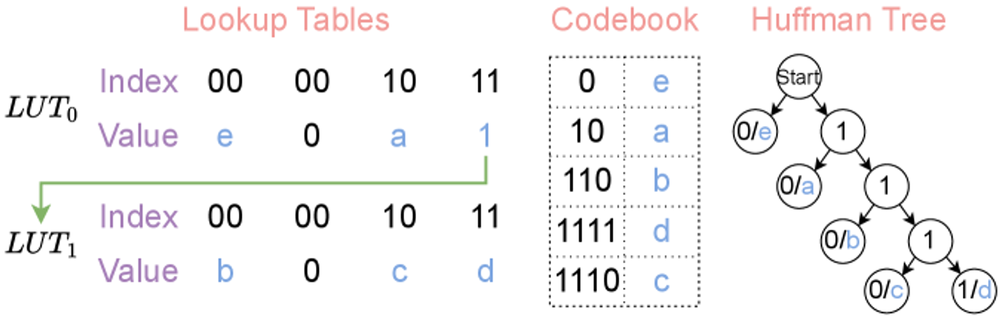
Hierarchical lookup table construction. A Huffman tree is built from symbol frequencies, and multi-level lookup tables enable efficient variable-length code decoding aligned with the GPU memory hierarchy.
Decoding: GPU-Optimized Parallel Decompression
The decoding kernel reconstructs exponents from the Huffman-encoded bitstream in five phases: memory initialization, data loading, parallel counting via reduction, coordinated decoding, and coalesced global memory write-back. This design maximizes GPU utilization through careful thread-local computation and block-level synchronization.
Tensor Management: Just-in-Time Decompression
ECF8 implements just-in-time decompression via PyTorch forward hooks. A single pre-allocated GPU buffer, sized to the largest layer, is reused across all layers, enabling memory-efficient inference with constant overhead regardless of model depth. This mechanism is what transforms memory compression into real inference acceleration.
Design Principle: ECF8 transforms memory savings into inference speedup: a smaller memory footprint accommodates larger batch sizes, which in turn yields higher throughput and lower per-request latency.
Results
We evaluate ECF8 on nine models spanning LLMs, DiTs, and MoE architectures ranging from 8B to 671B parameters. ECF8 achieves 9.8%–26.9% memory savings and 11.3%–177.1% throughput acceleration, all while maintaining bit-exact weight reconstruction. Under fixed memory budgets, the freed memory accommodates larger batch sizes: for DeepSeek-R1-0528 at 640 GB, ECF8 supports batch size 16 versus FP8's batch size 2, delivering 150.3% higher throughput and 60.1% lower per-request latency.
| Model | Memory (GB) | Memory ↓ | Supported Machine | Throughput ↑ |
|---|---|---|---|---|
| DeepSeek-R1-0528 | 623 → 530 | 14.8% | 8×H100 (80 GB) | 150.3% |
| Qwen3-235B-A22B | 218 → 186 | 14.4% | 4×H100 (80 GB) | 35.9% |
| Llama-3.3-70B | 63.8 → 54.7 | 13.4% | 1×H100 (80 GB) | 11.3% |
| Qwen3-Coder-30B | 27.9 → 23.7 | 14.3% | 1×RTX5090 (32 GB) | 23.7% |
| Qwen3-8B | 6.5 → 5.6 | 9.8% | 1×RTX4070 (12 GB) | 12.6% |
| FLUX.1-dev | 10.5 → 8.3 | 14.1% | 1×RTX4070 (12 GB) | 177.1% |
| Wan2.1-T2V-14B | 17.4 → 12.7 | 25.4% | 1×RTX4080 (16 GB) | 55.1% |
| Wan2.2-T2V-A14B | 30.5 → 21.9 | 26.9% | 1×RTX4090 (24 GB) | 108.3% |
| Qwen-Image | 26.2 → 20.6 | 21.0% | 1×RTX4090 (24 GB) | 126.6% |
ECF8 delivers consistent benefits across scales and modalities. Memory reductions enable deployment on lower-capacity hardware, and under fixed memory budgets, ECF8 supports larger batch sizes that translate into substantial throughput improvements.
Language Model Inference Acceleration
Under fixed memory budgets, ECF8 consistently enables higher throughput across LLMs by supporting larger batch sizes. DeepSeek-R1-0528 shows the most dramatic improvement: an 8× larger batch size (16 vs. 2) within 640 GB, yielding 150.3% higher throughput and 60.1% lower per-request latency.
| Model | Constraint | Max Batch Size | Per Request Latency (s) | Throughput (tokens/s) | |||||
|---|---|---|---|---|---|---|---|---|---|
| FP8 | ECF8 | FP8 | ECF8 | ↓ (%) | FP8 | ECF8 | ↑ (%) | ||
| DeepSeek-R1-0528 | 640 GB | 2 | 16 | 660.65 | 263.95 | 60.1 | 1.55 | 3.88 | 150.3 |
| Qwen3-235B-A22B | 240 GB | 32 | 64 | 107.56 | 79.14 | 26.4 | 9.52 | 12.94 | 35.9 |
| Llama-3.3-70B | 80 GB | 32 | 48 | 24.80 | 22.28 | 10.2 | 41.28 | 45.96 | 11.3 |
| Qwen3-Coder-30B | 32 GB | 16 | 32 | 107.33 | 86.70 | 19.2 | 9.54 | 11.80 | 23.7 |
| Qwen3-8B | 12 GB | 16 | 24 | 4.90 | 4.35 | 11.2 | 208.80 | 235.22 | 12.6 |
LLM inference under fixed memory budgets. ECF8 enables larger batch sizes within the same memory budget, yielding 11.3%–150.3% throughput improvements across models ranging from 8B to 671B parameters. Each batch generates 1024 tokens.
Diffusion Model Inference Acceleration
For diffusion models that rely on VRAM management (dynamic GPU/CPU offloading), ECF8's compact weights reduce data transfer overhead during frequent weight loading, translating storage efficiency directly into latency gains. FLUX.1-dev achieves a 45.9% end-to-end latency reduction, while Qwen-Image shows a 55.9% step-latency improvement.
| Model | DType | E2E Latency (s) | Step Latency (ms) | Memory (MB) | Memory ↓ | Latency ↓ |
|---|---|---|---|---|---|---|
| FLUX.1-dev | ECF8 | 13.15 | 438.4 | 14274 | 12.1% | 45.9% |
| FP8 | 24.29 | 809.5 | 16243 | |||
| Wan2.1-T2V-14B | ECF8 | 460.67 | 9213.4 | 18036 | 7.6% | 3.3% |
| FP8 | 476.21 | 9524.3 | 19529 | |||
| Wan2.2-T2V-A14B | ECF8 | 461.41 | 9228.2 | 27560 | 17.8% | 4.0% |
| FP8 | 480.45 | 9608.9 | 33517 | |||
| Qwen-Image | ECF8 | 49.05 | 1226.3 | 25766 | 7.9% | 55.9% |
| FP8 | 111.14 | 2778.4 | 27963 |
DiT inference with VRAM management. ECF8 reduces end-to-end latency by 3.3%–45.9% and peak memory by 7.6%–17.8% across diffusion transformer architectures. All experiments use DiffSynth on a single GH200 GPU (96 GB).
Practical Impact: ECF8 enables deploying DeepSeek-R1-0528 (671B) on 8×H100 instead of 8×H200, and allows Wan2.1-T2V-14B to fit on a single RTX 4080 where uncompressed FP8 exceeds memory limits. For diffusion models, FLUX.1-dev achieves a 45.9% end-to-end latency reduction and Qwen-Image achieves a 55.9% step-latency improvement.
Interactive Demo
FLUX.1-dev on single GH200 GPU (96 GB) · DiffSynth · 30 denoising steps
Bitcoin is the king
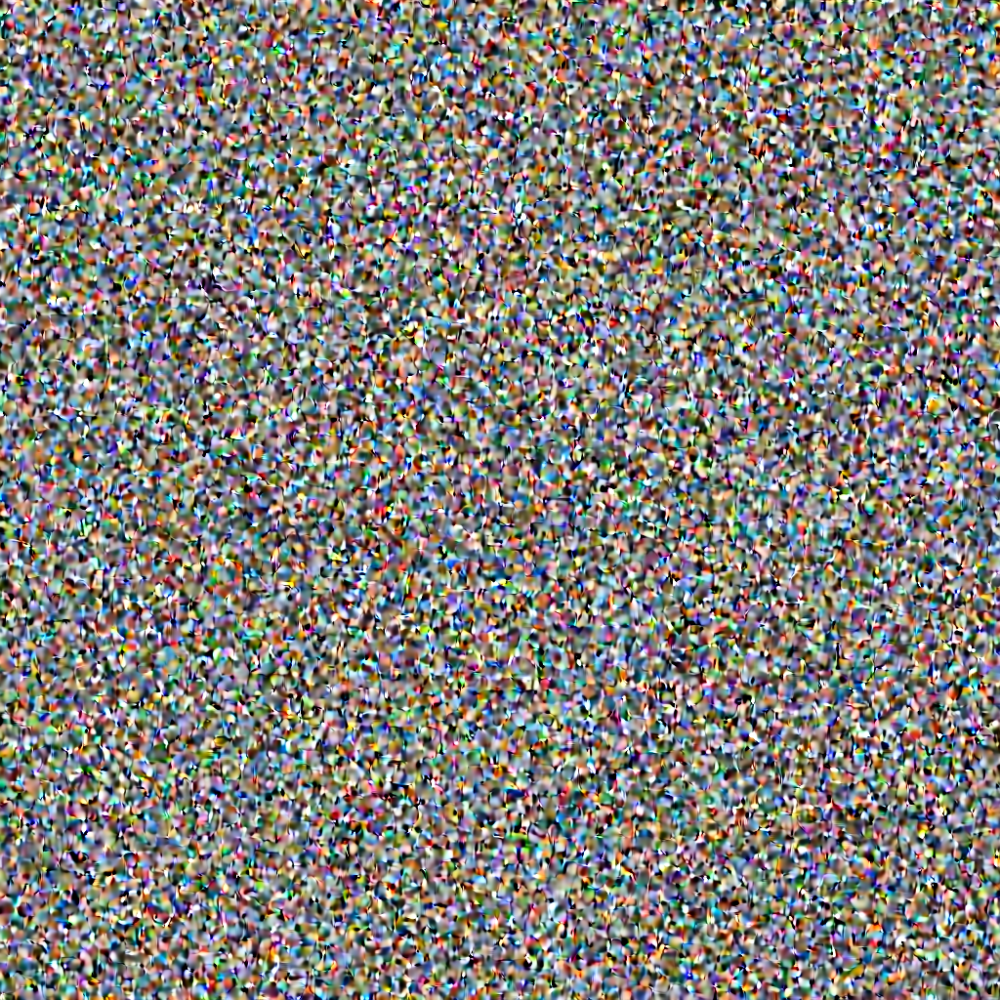
Perfectly Lossless Compression
Unlike lossy quantization methods, ECF8 guarantees bit-exact weight reconstruction. The numerical difference between outputs from ECF8-compressed and original FP8 models is perfectly zero, not approximately zero, but exactly zero. Below are images generated by the ECF8-compressed Qwen-Image model, pixel-identical to the original FP8 model's outputs under the same random seed and inference parameters.
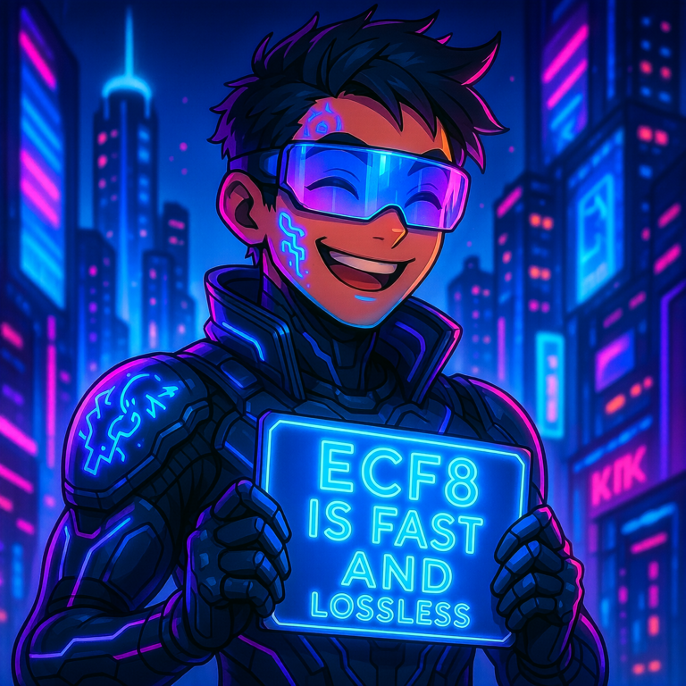
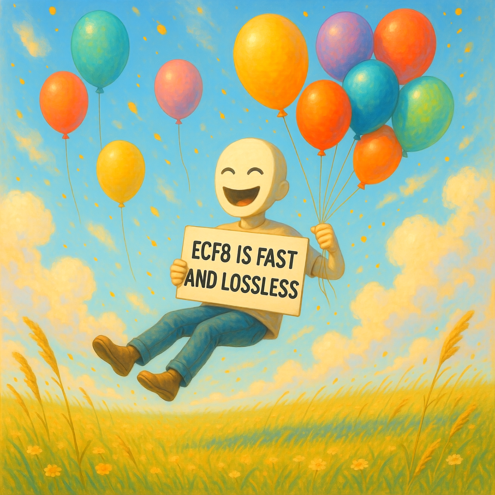
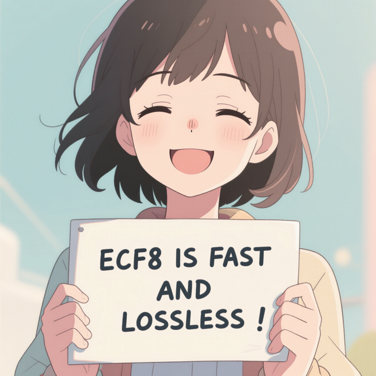
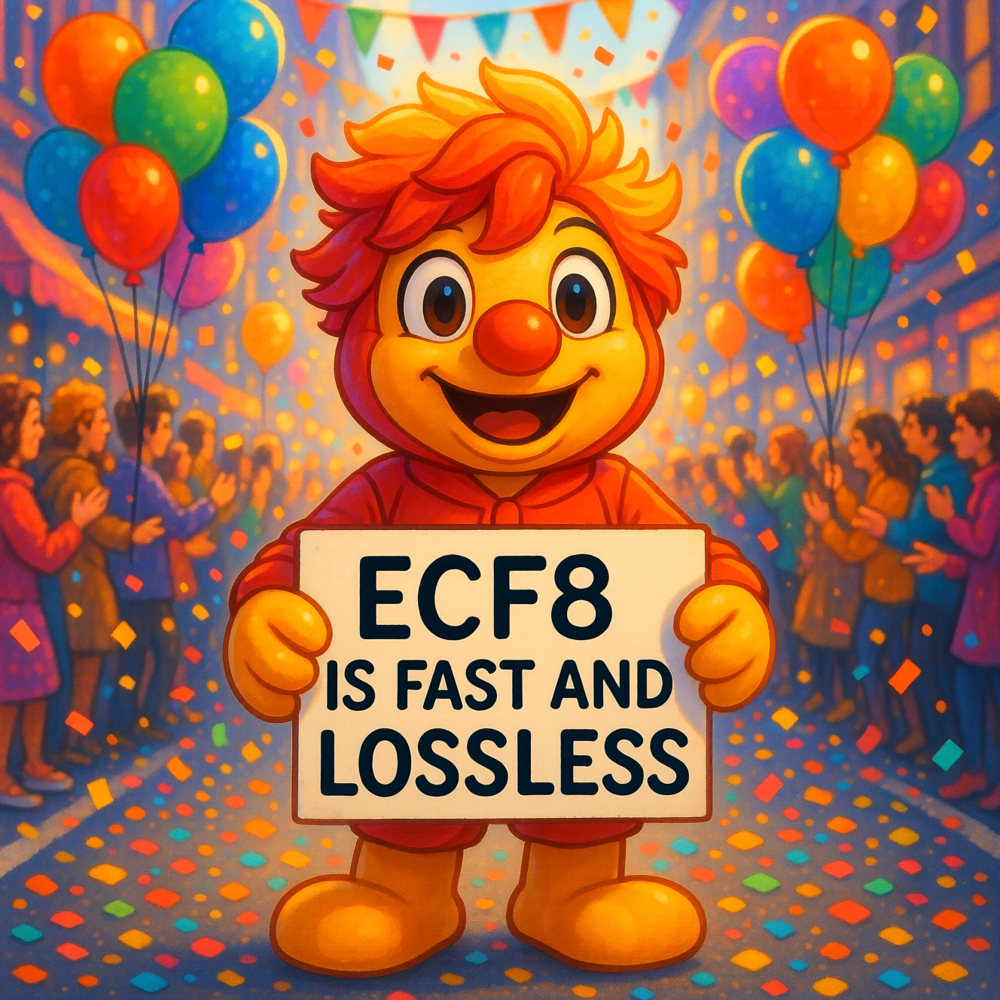
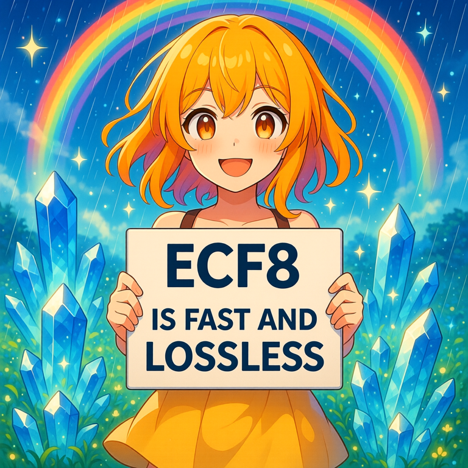
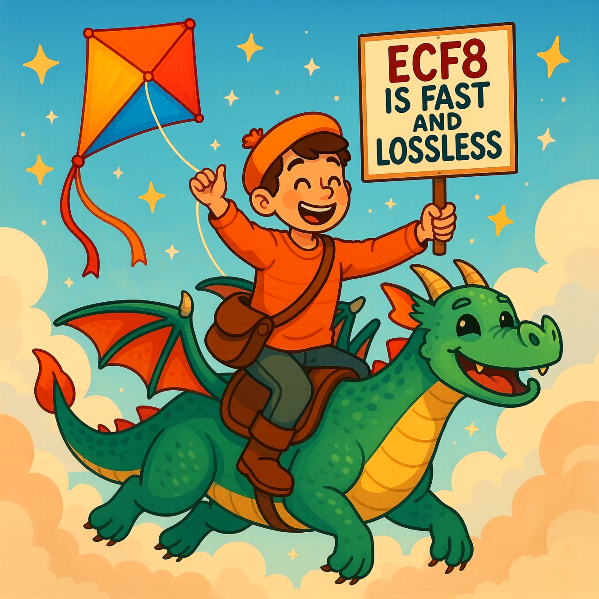
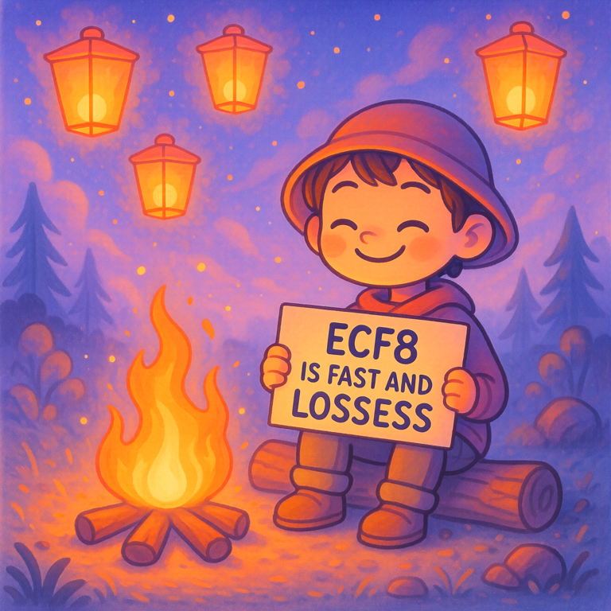
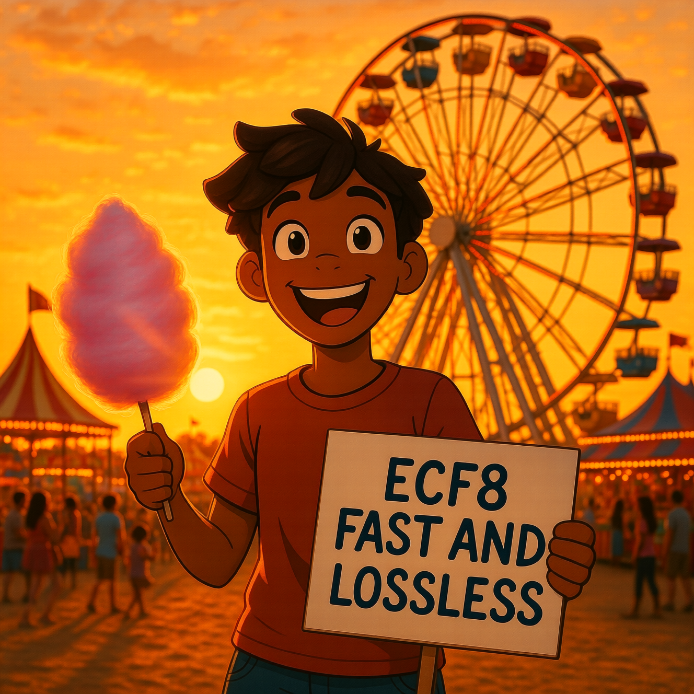
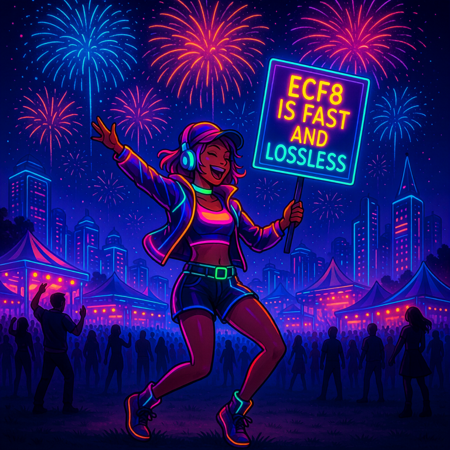
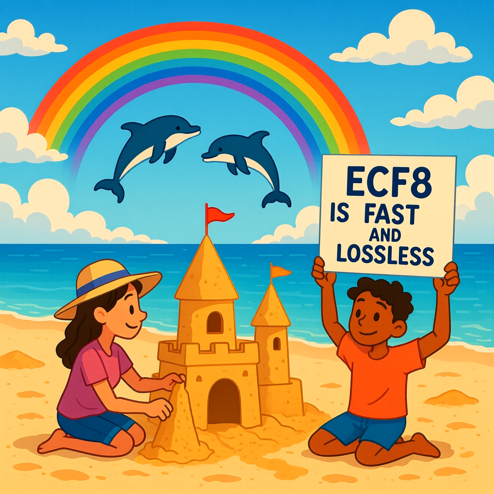
Pixel-perfect reconstruction. Images generated by the ECF8-compressed Qwen-Image model are identical to those from the original FP8 model. The numerical difference is exactly zero.
LLM Benchmark Verification
Beyond visual outputs, we verify lossless compression on standard LLM benchmarks. ECF8 and FP8 produce identical scores across all tasks, confirming bit-perfect reconstruction.
| Benchmark | Metric | FP8 | ECF8 |
|---|---|---|---|
| GSM8K | Exact Match | 0.876 ± 0.009 | 0.876 ± 0.009 |
| BoolQ | Accuracy | 0.867 ± 0.006 | 0.867 ± 0.006 |
| PIQA | Accuracy | 0.764 ± 0.010 | 0.764 ± 0.010 |
| Winogrande | Accuracy | 0.691 ± 0.013 | 0.691 ± 0.013 |
Numerical verification of lossless compression for Qwen3-8B-FP8. ECF8 and FP8 yield identical scores across all tasks, confirming bit-perfect reconstruction.
Lossless Guarantee: ECF8 preserves full model fidelity, with no accuracy degradation, no generative quality loss, and no artifacts. All outputs are bit-for-bit identical to those of the original FP8 model.
This page highlights our key findings. The full paper contains additional experiments, theoretical proofs, kernel-level benchmarks, and vLLM integration details. We invite interested readers to read the paper for the complete picture.
Citation
@inproceedings{
yang2026to,
title={To Compress or Not? Pushing the Frontier of Lossless Gen{AI} Model Weights Compression with Exponent Concentration},
author={Zeyu Yang and Tianyi Zhang and Jianwen Xie and Chuan Li and Zhaozhuo Xu and Anshumali Shrivastava},
booktitle={The Fourteenth International Conference on Learning Representations},
year={2026},
url={https://openreview.net/forum?id=XI1CeufywD}
}